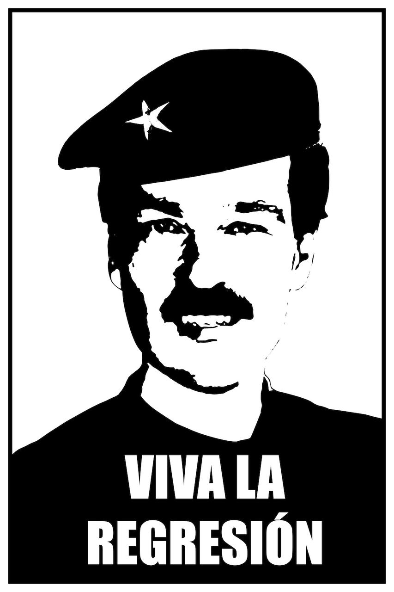
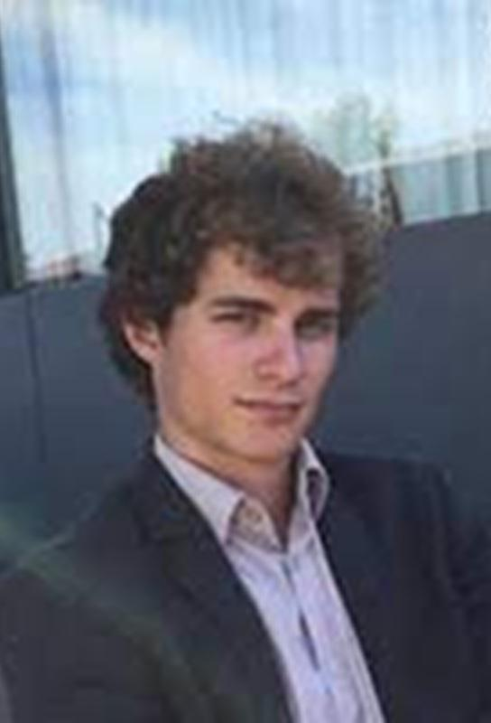
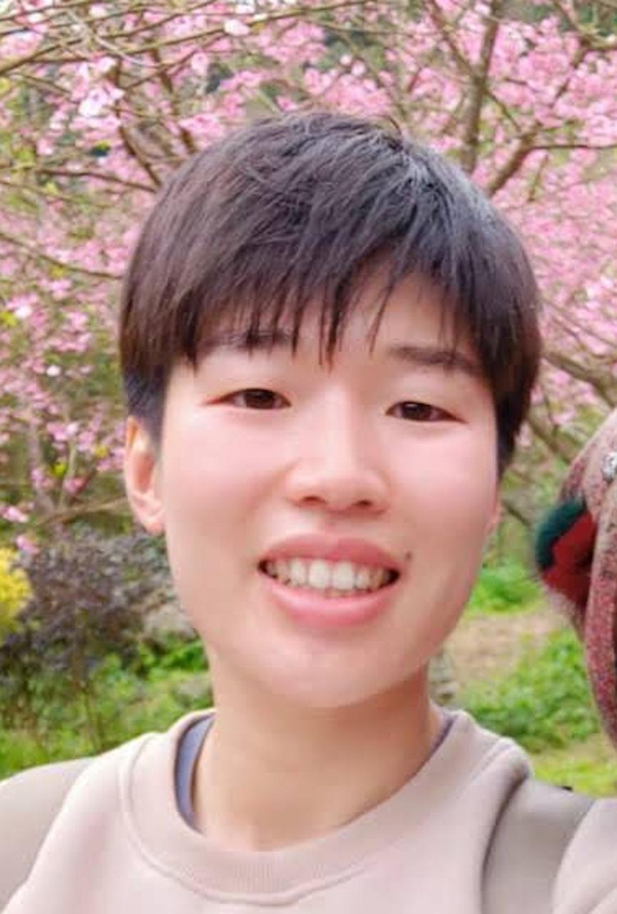
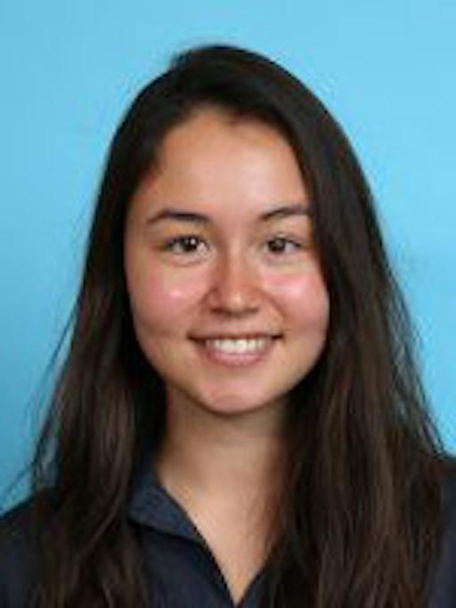
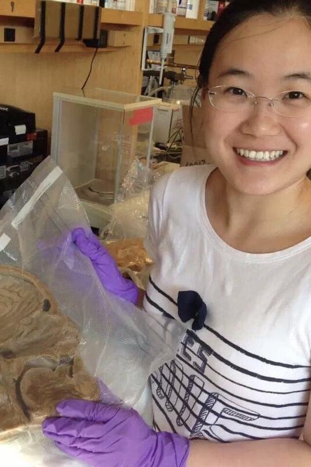
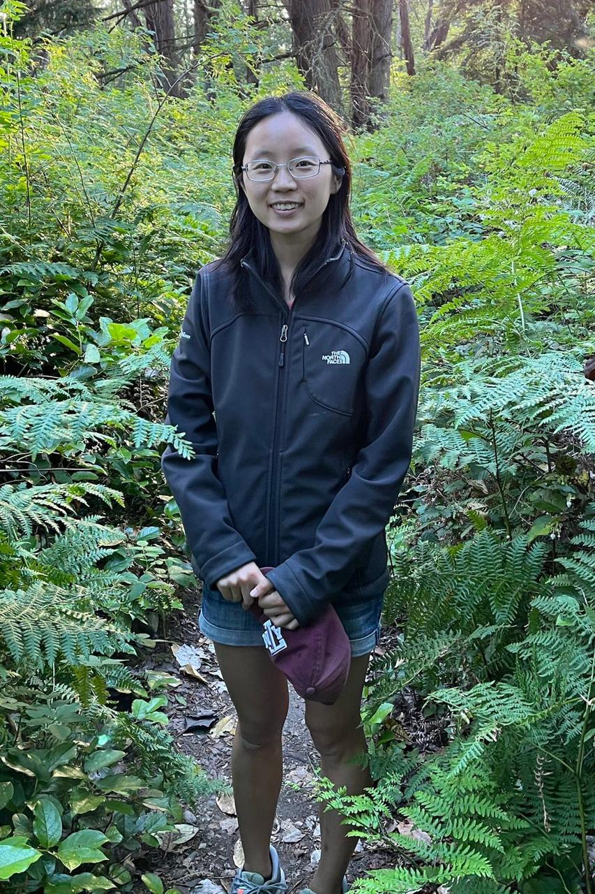
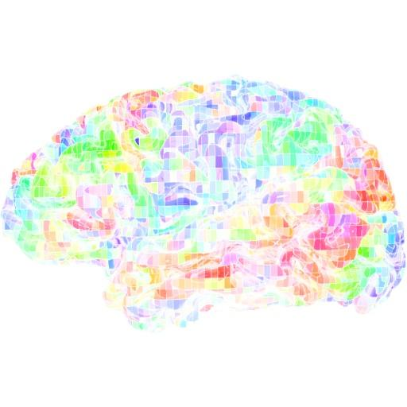
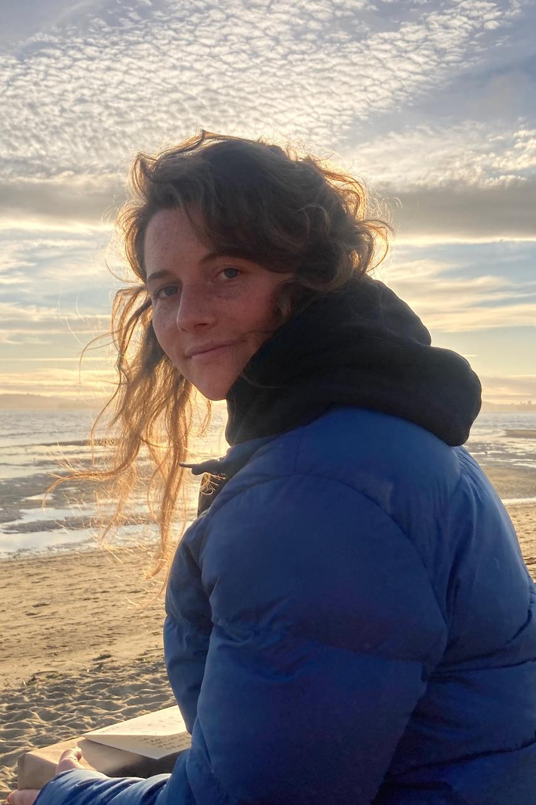

People
|  | Jack Gallant, PhD. Head of lab. |
Matteo Visconti di Oleggio Castello, PhD. Senior postdoc. Areas of interest include individual differences, clinical applications of functional imaging, and fMRI methods development. |
|
|  | Tom Dupre la Tour, PhD. Postdoc. Areas of interest include algorithms for brain data processing, and applications of data science to improve fMRI. |
Tianjiao Zhang, PhD. Postdoc. Areas of interest include studies of the human navigation system, and fMRI studies in VR. |
|
|  | Christine Tseng, PhD. Postdoc. Areas of interest include brain systems mediating concepts of the self and others, and language processing. |
|  | Michele Winter, Vision Science graduate student. Areas of interest include computational modeling of neurophysiology data. |
|  | Lily Gong, Neuroscience graduate student. Areas of interest includea bilungual language processing, and reading. |
|  | Catherine Chen, EECS graduate student. Areas of interest include brain representations of linguistic and spatial relationships, and bilingualism. |
|  | Emily Meschke, Neuroscience graduate student. Areas of interest include development of new methods for recovering and interpreting brain networks. |
Amanda Lebel, Neuroscience graduate student. Areas of interest include functional imaging of the cerebellum, and dyslexia. |
|
 |
Alicia Zeng, Biophysics graduate student. Areas of interest include computational modeling of clinical deep-brain stimulation data. |
 |
Cheol Jun Cho, EECS graduate student. Areas of interest include language, navigation, and using deep networks in data analysis and modeling. |
|  | Jen Holmberg, Neuroscience graduate student. Areas of interest include brain mechanisms mediating the psychedelic experience. |